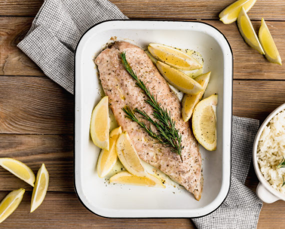

PESCADO AL HORNO

Ingredientes
- 4 filetes de pescado blanco (reineta, tilapia o similar)
- ½ taza de pan rallado
- 1/3 taza de queso parmesano rallado
- 1 diente de ajo picado chico
- ½ cucharadita de Orégano Gourmet
- 5 Aceitunas negras, deshuesadas y picadas
- 2 cucharadas de aceite de oliva
Preparacion
- Calentar el horno a 180C.
- Poner el pescado en una fuente de horno mantequillada. En un bowl mezclar el pan rallado, ajo, Orégano Gourmet y las aceitunas picadas. Mezclar bien. Agregar el aceite y revolver hasta humedecer toda la mezcla. Dividir la mezcla y poner sobre cada filete de pescado formando una costra.
- Hornear el pescado por 20 minutos o hasta que el pescado esté cocido y la costra dorada.
Volver a la pagina principal